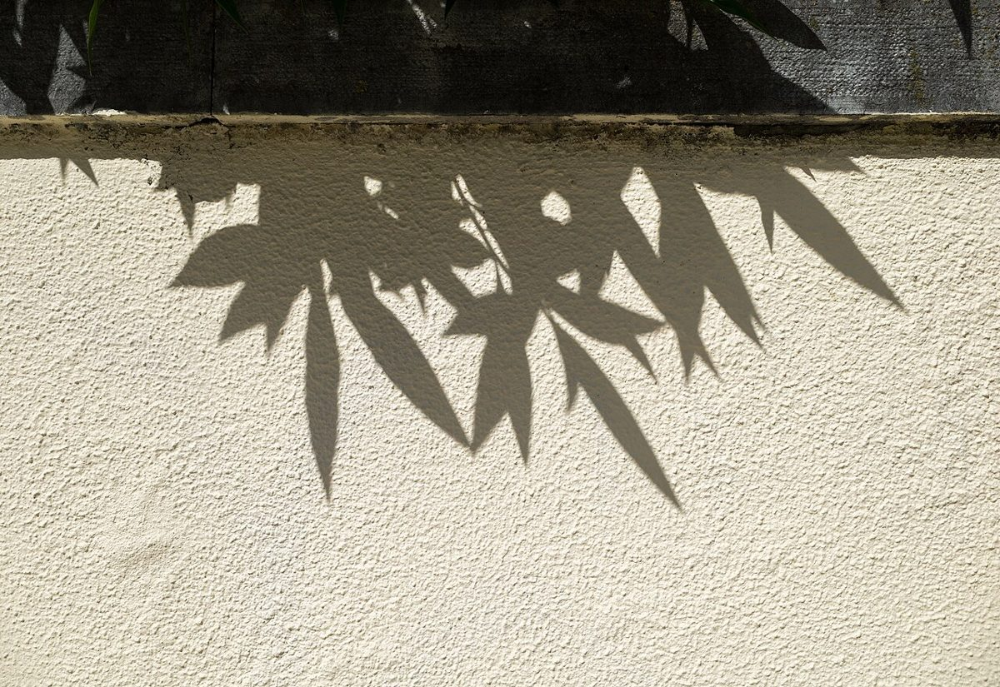
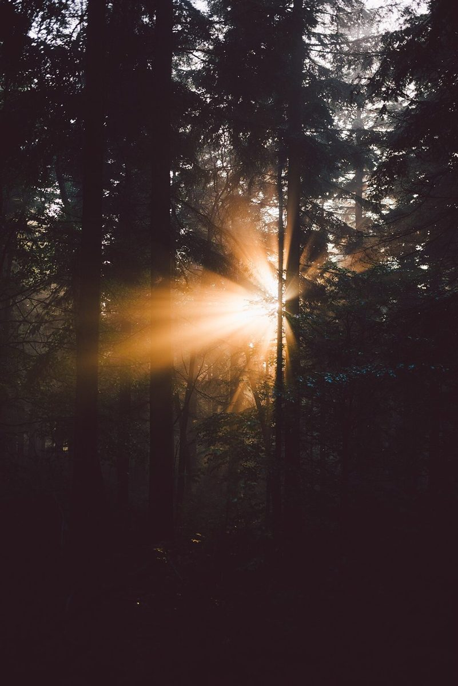
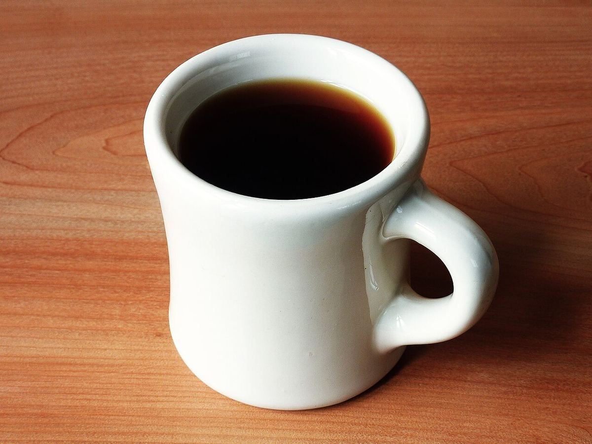

カフェ / 高知県四万十市
SHADETREECOFFEE

高知県四万十市のカフェ「SHADE TREE COFFEE」のご案内ページです。営業時間やメニューなど、詳しいことは準備中。まずはInstagramをのぞいてみてください。
制作側の連想
影の定規
このページの「影の定規」という作りは、屋号の「SHADE TREE(木陰をつくる木)」という言葉から制作側が連想したものです。お店の理念・店名の由来・店内や周辺の様子とは無関係で、店名の意味を決めつけるものでもありません。 一日のうちで影の長さが変わっていくように、5つのページを「朝の6時から夕方の18時まで」の目盛りに見立てました。
光と影のかけら(イメージ)
葉の影と、逆光。
写真は国外・撮影地不明のフリー素材です。お店や四万十市の写真ではありません。



ご案内
確認できていること
| 所在地 | 〒787-0012 高知県四万十市右山五月町7-7 |
|---|---|
| 電話 | なし |
| 営業時間 | 準備中 |
| 定休日 | 準備中 |
| ご予約 | 準備中 |
| 駐車場 | 準備中 |
| SNS | Instagram @shade_tree_coffee |